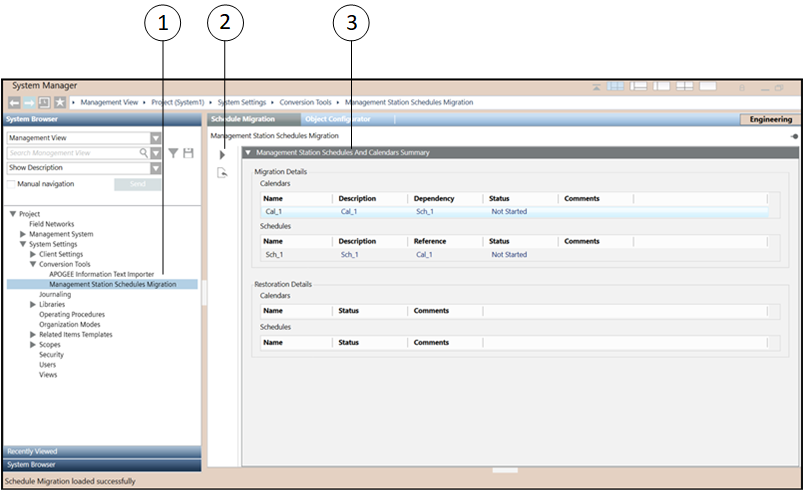

Management Station Schedules and Calendars to Flex Client
You can migrate all Management Station Schedules and Calendars entries from Management Station to Flex Client. For more details on how to migrate the Schedule and Calendar objects, refer Management Station Schedules and Calendar.

|
1 | System Browser | Displays Management Stations Schedules Migration, |
2 | Scheduler Toolbar | Includes the following icons: Migrate ( Restore ( |
3 | Management Station Schedules and Calendars Summary | Displays the list of Schedule and Calendar objects that you want to migrate/restore. |
 ): Allows migrating the Schedule and Calendar entries from the Management Station to Flex Client.
): Allows migrating the Schedule and Calendar entries from the Management Station to Flex Client. ): Allows you to restore the Schedule and Calendar entries migrated from Flex Client to Management Station.
): Allows you to restore the Schedule and Calendar entries migrated from Flex Client to Management Station.